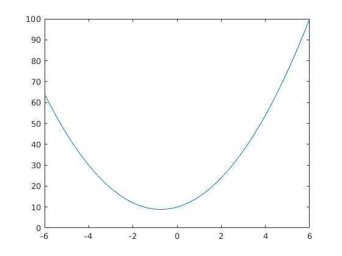

Contents
%-- 01/28/2020 02:40:16 PM --% mkdir lab0 cd lab0 a=1 b=2 c = a+b A = [ 1 2 ; 3 4] B=A*A C=A.*A C diary lab0_diary.m % Uzzīmēsi 2. kārtas polinomu % polinoma koeficienti: C = [2 3 10] % Uzzīmēsim 2. kārtas polinomu C = [2 3 10]; x = -6:2:6; % x = sākuma_elements:solis:beigu_elements y = C(1)*x.^2+C(2)*x+C(3) % uzzīmēsim plot(x,y) x2 = -6:0.01:6; y2 = C(1)*x2.^2+C(2)*x2+C(3); plot(x2,y2)
Warning: Directory already exists.
a =
1
b =
2
c =
3
A =
1 2
3 4
B =
7 10
15 22
C =
1 4
9 16
C =
1 4
9 16
C =
2 3 10
y =
64 30 12 10 24 54 100
 Līnijas izskata maiņa
plat(x,y) plot(x,y) plat(x2,y2) plot(x2,y2)
Undefined function 'plat' for input arguments of type 'double'. Error in lab0_history (line 26) plat(x,y)
Līnijas izskata maiņa
krāsa
plot(x,y, 'g') plot(x,y, 'o') % līnijas izskats plot(x,y, '--') % visi trīs kopā plot(x,y, '--og') help plot plot(x,y, '-.xc') plot(x,y, '-.xm') plot(x,y, ':.xm') plot(x,y, '-.xm') close all my_plot(x,y) my_plot(x2,y2)
Kā zīmēt vairākas līknes
plot(x,y,x2,y2)
ja x ir vienāds
plot(x,[y' -y']) plot(x,y,'o',x2,y2) % citas grafiskās funkcijas stem(x,y) stairs(x,y) bar(x,y)
Kā zīmēt vairākas līkmes - 2
plot(x2,y2) hold on stairs(x,y) hold off
Lisažu figuras zīmēšana
parametriskie grafiki
edit help lisazu lisazu lisazu_fun(1,2) lisazu_fun_anim(5,2) lisazu_fun_anim(5,1337) lisazu_fun_anim(69,1337) lisazu_fun_anim(1,1337) lisazu_fun_anim(2,1337) lisazu_fun_anim(21,1337) lisazu_fun_anim(88,1337) lisazu_fun_anim(133,1337) lisazu_fun_anim(1337,1337) lisazu_fun_anim(69,69) lisazu_fun_anim(3333,3333) dairy off diary off